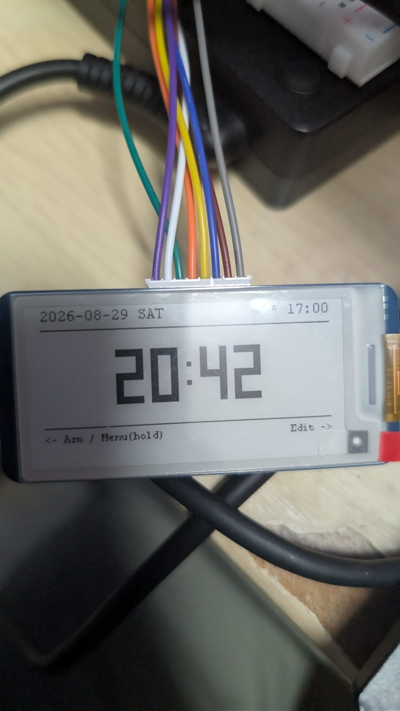
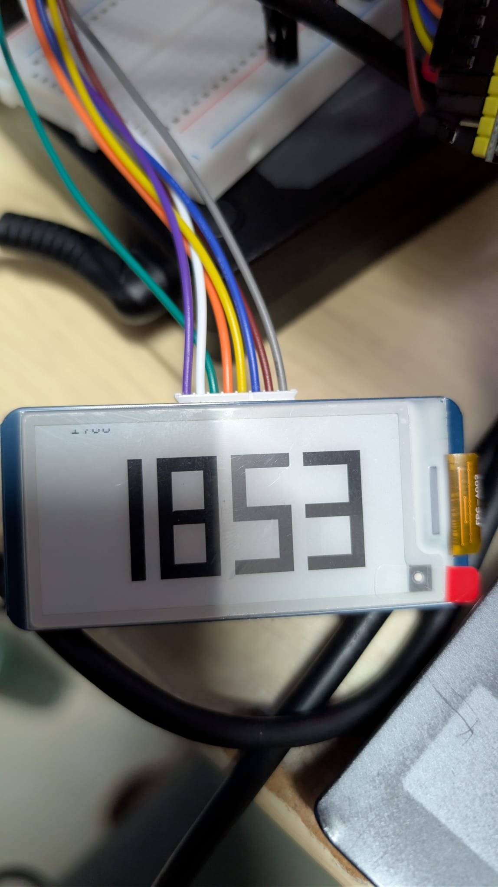

Potclean Clock
An e-paper desk clock built on a perfboard, inside a case shaped like Potclean from Hunter × Hunter. I made it to learn perfboard wiring and PCB drawing, and to test how far AI can speed up a hardware project.
- Board
- ESP32-S3 (N16R8) on a 16 × 27 perfboard
- Screen
- Waveshare 2.13″ e-paper V4
- Time
- DS3231 RTC · optional NTP
- Sound
- MAX98357A I2S amp · WAV ringtone
- Controls
- 2 × KY-040 rotary encoders (the ears)
- Power
- LiPo · TP4056 · SX1308 · deep sleep
- Case
- Modelled in Blender, 3D-printed
- PCB
- In progress in EasyEDA
Six modes, two knobs
The left ear picks a mode, the right ear changes values. The screen uses partial refresh, so the clock updates every minute without the full e-paper flash.
- 1
Potclean
The Hunter × Hunter interest joke: a number that grows ×1.1 every 10 seconds, with a ring each time. Try it below.
- 2
Stopwatch
Start, stop and reset from the right knob, refreshing every second.
- 3
Timer
Set minutes and seconds with the knob, pause and resume.
- 4
Clock
Big seven-segment HH:MM with date and alarm, kept by the DS3231 so it doesn't need WiFi.
- 5
Volume
Alarm loudness for the I2S amplifier and speaker.
- 6
Setup
The clock opens its own WiFi hotspot with a web page for WiFi, alarm, volume and time zone, plus one-tap NTP sync.
Interest, every ten seconds
Entering the mode picks a random number from 10 to 300. Every 10 seconds it becomes value × 1.1, rounded and at least one higher, until it hits 99,999,999, and the clock plays its ringtone each time. It's the character's ability from the anime, turned into a mode.
This one is running live in your browser with the same rule.
Learning on a perfboard
The ESP32-S3 plugs into two 24-pin sockets on a 16 × 27 perfboard, so it can come out again, and the modules wire to it. I mapped every pin and rail before soldering: screen on SPI, the RTC on I2C, the amplifier on I2S, the encoders on 3.3 V only after one ran hot on 5 V.
Power runs from a 3.7 V LiPo through a TP4056 charger and an SX1308 boost to 5 V. In its ultra power-save mode the ESP32 deep-sleeps between minutes, stretching a 2000 mAh cell from about a day to a few weeks.
The perfboard circuit is now complete and running everything, including the alarm, which plays Potclean's own line from the anime through the I2S amp. Next step: the same circuit as a real PCB, which I'm drawing in EasyEDA now.


Modelling an enclosure in Blender
Every printed part of the case, taken apart: the head splits into front and back shells around the screen, the ears come off with the encoder inside, and the body, wings, hands, legs and scarf are separate prints.
Nothing selected
Pick a part to highlight it.
I modelled the case in Blender instead of Fusion 360. Blender is much freer: you can push every vertex and stack modifiers, which suits a round character figure. The ears hold the two encoders and the forehead frames the screen.
The hard part was that Blender isn't CAD. There's no step-by-step history to roll back, and dimensions have to be checked by hand, so every fit with the real parts (the screen window, the encoder shafts, the board inside) had to be confirmed manually.
Without a history, every milestone became its own file. By the time it was ready to print there were 24 versions:
- POTCLEAN 1
- … 2
- … 3
- … 4
- … 5
- … 6
- potclean3
- Bool
- recover
- big
- big2
- big3
- big4
- big5
- big6
- big7
- big8
- big9
- big10
- big11
- big12
- big13
- Revamp
- For Rendering
The final model is split into printable parts: head front and back, screen glass and frame, ears, body front and back, wings, hands, legs, cheeks, eyes and the scarf.
How fast can AI push a hardware project?
Part of the point was to test AI as a partner for the knowledge I didn't have yet. I started from Waveshare's official 2.13″ e-paper library and demo, then built the rest of the firmware with AI support: the modes, partial refresh, the RTC driver, I2S audio, the encoder handling, the setup hotspot and deep sleep.
The setup web page was designed in Figma first, then embedded in the firmware so it works offline.
- ~5,900lines of my own firmware, on top of the Waveshare library
- 35commits from first e-paper test to the setup website
- 16 Jul → 30 Aug2026, from the first commit to the current firmware